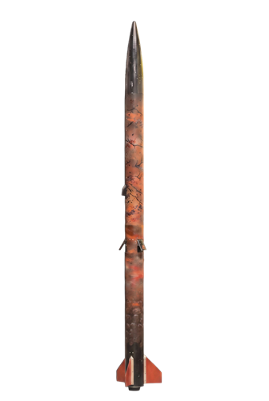
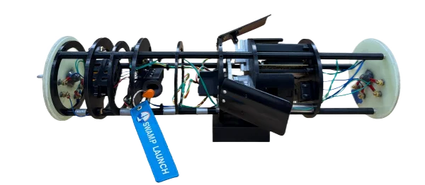
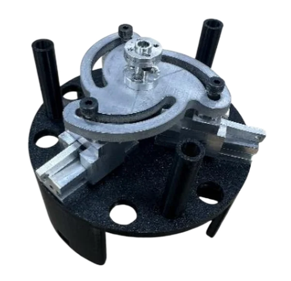
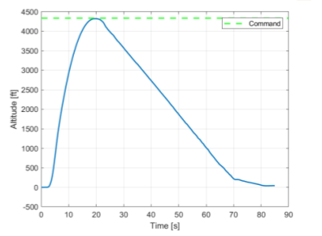
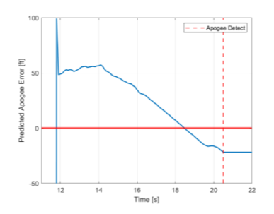

krittin jindamai
home
about
experience
projects
← back to projects & papers
project — 02
Project TerraGator
Apogee Control System for Project TerraGator

finished rocket

ACS assembly

airbrake mechanism
timeframe
Fall 2025 – Spring 2026
role
Lead of Guidance Navigation and Control
tools & methods
MATLAB
Simulink
C++
Fusion 360
SolidWorks
Ansys Mechanical
results
3 successful flights within 20 ft of target apogee using the ACS; 5th place at the 2026 NASA USLI competition.
mechanical
Designed Apogee Control System airbrake mechanism on Fusion 360 and SolidWorks
Manufactured all parts on lathe, mill, CNC, and waterjet
Performed Finite Element Analysis on the structure (static load and modal analysis) to verify structural integrity during actuation
electrical & software
Built inertial navigation system using IMU, barometer, and Teensy 4.1, coded entirely in C++
Sensor fusion using Kalman Filter for orientation and position
Finite state machine for state detection
Control airbrake actuation using PID controller
Tuned PID gains with a custom MATLAB + Simulink simulation
results

altitude vs. time — actual against commanded apogee

predicted apogee error, converging as apogee is detected